CO3133 · Deep Learning and Its Applications · Semester 261
We classify short English texts from dair-ai/emotion into six emotions and compare a TF-IDF + Logistic Regression baseline with two fine-tuned transformers, DistilBERT and BERT. On the validation set (M2, preliminary), DistilBERT reaches Macro-F1 0.9155 ± 0.0020 over three seeds against 0.8489 for the baseline; BERT reaches 0.9163 ± 0.0032, no better than DistilBERT, at about twice the cost. Test results follow after model selection.
Single-label multiclass classification: given one short English text, predict one of six emotions (sadness, joy, love, anger, fear, surprise). The prediction unit is one text. Recognising emotion in short, informal writing is a common building block for feedback analysis, support triage and social-media monitoring. The main difficulties are strong class imbalance (joy 33.5% vs surprise 3.5% of train), very short texts (median 17 words), emotions that overlap in wording (joy and love), and machine-generated labels with some conflicting duplicates.
We use the six-class split configuration of
dair-ai/emotion
(Saravia et al., EMNLP 2018), pinned to Hugging Face revision cab853a: 20,000 short English
texts with one label each (sadness, joy, love, anger, fear, surprise). The dataset card marks the labels as
machine-generated and restricts use to education and research. No split has missing, blank or non-string
texts or invalid labels. This section shows only the findings that changed a modelling decision.
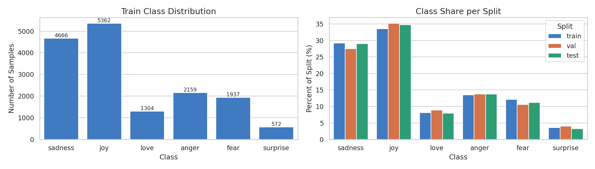
Most texts follow "i feel(ing) <emotion word> …". The joy sample is negated yet labelled joy.
| Finding | Evidence (train unless stated) | Decision |
|---|---|---|
| Imbalanced classes | joy 33.5%, surprise 3.5%; ratio 9.47 | Select models by validation Macro-F1, not accuracy. Class weights were tested on the baseline (validation only): balanced weights raised Macro-F1 from 0.7527 to 0.8489 and surprise recall from 0.40 to 0.81, so they are used for every model |
| Same text in two splits (leakage) | 19 texts appear in two splits: 11 in train and test, 3 in val and test, 5 in train and val. A model trained on such a text would be scored on a sentence it has already seen, which inflates val/test scores | Rules 1–2: keep the test copy and remove the train/val copy; for train–val pairs keep the val copy (section 03) |
| Same text, different labels | 51 of the 52 repeated texts carry two different labels, e.g. "i am feeling stressed and more than a bit anxious" is sadness in train but anger in test | Rules 3–4: remove such groups from train/val (no label is guessed); test keeps its released labels, noted as a limitation |
| Short texts | DistilBERT tokens: P95 45, max 87 (incl. [CLS]/[SEP]) | MAX_LEN = 128: no text is truncated |
| No length shortcut | Median words per class 16–19 | Length is not a cue for the label; no length feature or length-based sampling |
| Labels look keyword-driven | Most class-specific n-grams are emotion adjectives found in a single class (e.g. "feel offended" in anger only) | Expect a strong lexical baseline; negated texts are checked as an error group (hypothesis, not a result) |
| Small vocabulary gap | Words unseen in train: 2.72% of val tokens, 2.74% of test tokens | A TF-IDF vocabulary fit on train only covers val/test well |
Both models get the minimal text: Unicode NFC, lowercase, trimmed, repeated spaces collapsed. Nothing else is removed, because DistilBERT uses punctuation and function words, and negations such as not flip an emotion. The aggressive variant is used only by the baseline stopword experiment.
Both models (main runs). Train vocabulary 15,188 words, 19.18 words per text.
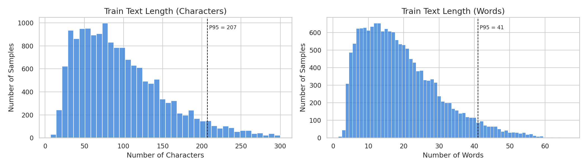
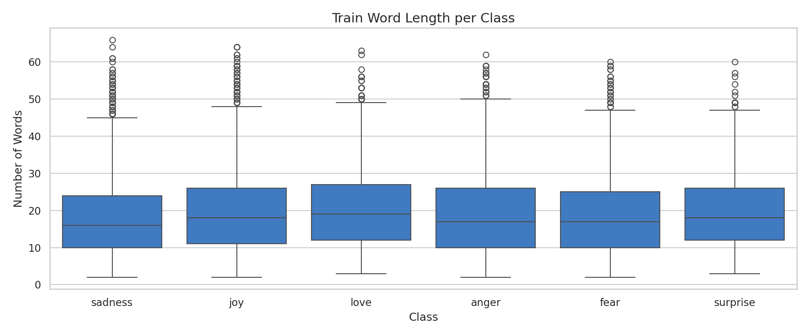
Baseline stopword experiment only. Keeps letters and digits, removes 295 scikit-learn stopwords but keeps 23 negations and intensifiers (not, no, never, very, so, but…). 9.31 words per text, no empty text.
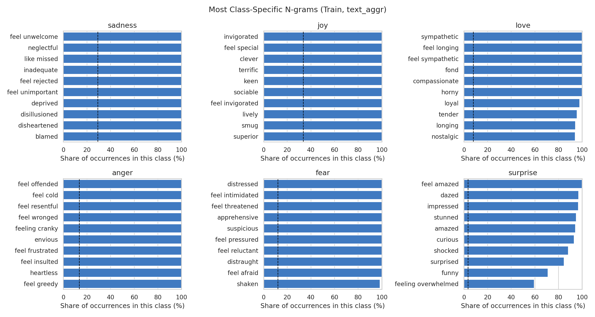
| Split | Median | P95 | P99 | Max | Texts longer than MAX_LEN = 128 |
|---|---|---|---|---|---|
| train | 20 | 45 | 57 | 87 | 0 (0%) |
| val | 20 | 44 | 56 | 69 | 0 (0%) |
| test | 20 | 45 | 55 | 66 | 0 (0%) |
DistilBERT reads WordPiece tokens, not words: it adds [CLS] and [SEP] and splits some words into pieces
(e.g. didnt → didn + ##t), so one word is about 1.06 tokens here.
The longest text has 87 tokens, so MAX_LEN = 128 keeps every text whole and nothing is truncated.
We keep the official train / validation / test splits and never change the test set. Two texts count as the same when their normalized keys match (NFC → lowercase → trim → collapse spaces). The four approved rules are applied in order; the first two prevent leakage, the last two clean labels. Test is used once, after model selection.
| Rule | Train removed | Val removed |
|---|---|---|
| 1. Text also in test → drop the train/val copy | 11 | 3 |
| 2. Text in both train and val → drop the train copy | 5 | – |
| 3. Same text with different labels → drop the whole group | 60 | 4 |
| 4. Same text, same label → keep the first row | 1 | 0 |
| Total | 77 | 7 |
| class | train | val | test |
|---|---|---|---|
| sadness | 4,661 (29.27) | 550 (27.60) | 581 (29.05) |
| joy | 5,340 (33.54) | 702 (35.22) | 695 (34.75) |
| love | 1,283 (8.06) | 176 (8.83) | 159 (7.95) |
| anger | 2,152 (13.52) | 274 (13.75) | 275 (13.75) |
| fear | 1,923 (12.08) | 211 (10.59) | 224 (11.20) |
| surprise | 564 (3.54) | 80 (4.01) | 66 (3.30) |
A lexical baseline shows how far word and bigram counts go on this data; the EDA (section 02) suggested labels
follow emotion keywords, so a strong baseline was expected. DistilBERT is the pretrained model from the
approved plan: it reads the whole text in context (word order, negation). BERT is the larger encoder it was
distilled from. All three use the same filtered splits and the same minimal text (text_min:
NFC, lowercase, whitespace).
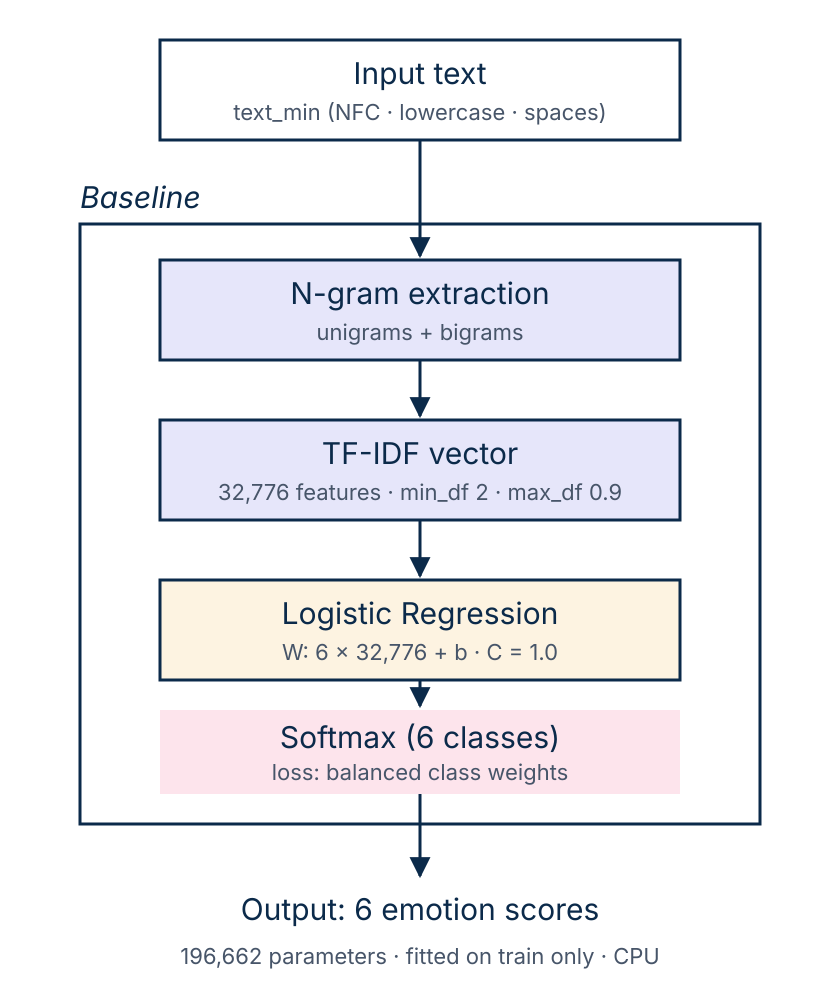
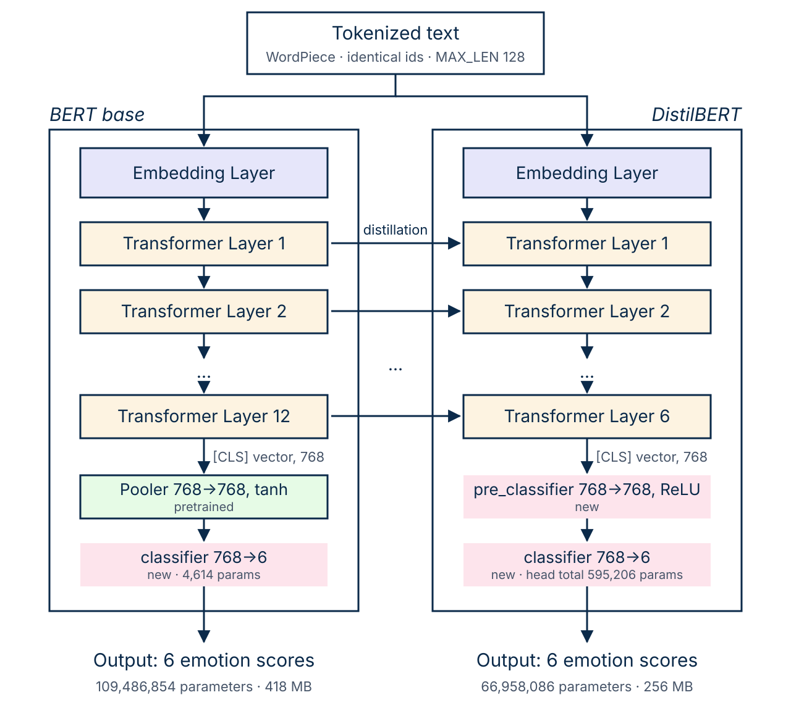
| TF-IDF + LR | DistilBERT | BERT | |
|---|---|---|---|
| Input | Sparse TF-IDF vector (uni + bigrams) | WordPiece tokens, MAX_LEN 128 | Same WordPiece vocabulary and MAX_LEN as DistilBERT |
| Loss | Cross-entropy, balanced class weights | Weighted cross-entropy | Weighted cross-entropy |
| Parameters | 196,662 | 66,958,086 | 109,486,854 |
| Self-implemented | Filtering, features pipeline, class-weight test (scikit-learn models) | Data loader, training loop, weighted loss, two learning rates, checkpoint selection (Hugging Face pretrained weights) | |
| Libraries | scikit-learn | PyTorch, Hugging Face Transformers | PyTorch, Hugging Face Transformers |
| Hardware | Colab CPU, Intel Xeon @ 2.00GHz (2 vCPU) | Colab Tesla T4 (14.6 GB) | Colab Tesla T4 (14.6 GB) |
| Optimizer / learning rate | Transformers: AdamW, 2e-5 for the pretrained encoder and 1e-4 for the new head. Baseline: logistic regression (lbfgs), C = 1.0 |
|---|---|
| Loss | Cross-entropy with balanced class weights computed on train (surprise ×4.71, joy ×0.50) |
| Batch size / epochs | 16 / 3 (996 steps per epoch, 2,988 in total) |
| Scheduler / warmup | Linear warmup over the first 10% of steps (298), then linear decay to 0 |
| Regularization / early stopping | Weight decay 0.01, gradient clipping at 1.0, the models' default dropout; no early stopping, the best epoch is kept |
| Checkpoint criterion | Best validation Macro-F1 |
| Seed | 42 for every run; DistilBERT and BERT full fine-tune repeated with seeds 43 and 44 (mean ± std over three seeds) |
| Hardware / software | Colab Tesla T4 14.6 GB, Intel Xeon 2 vCPU, 12.7 GB RAM; Python 3.13.16, PyTorch 2.11.0+cu130, Transformers 5.20.2, scikit-learn 1.6.1 |
| Hyperparameter selection | Not tuned: standard BERT fine-tuning values, identical for both transformers. Class weights were chosen on validation with the baseline (Macro-F1 0.8489 on vs 0.7527 off) |
Main run (seed 42) of each transformer. Training loss falls from 0.67 (DistilBERT) and 0.80 (BERT) in epoch 1, an average that includes the steps with a still-random head, to about 0.12 in epoch 3; validation loss falls from 0.24–0.25 to about 0.20. Validation Macro-F1 rises over the epochs; the saved epoch is 3 for DistilBERT and 2 for BERT (0.9200, then 0.9154 at epoch 3). Over all six transformer runs, validation loss rose again at epoch 3 in three runs (DistilBERT seeds 43 and 44, BERT seed 44) while Macro-F1 still improved, and the selected epoch is the last one in five of six runs. Three epochs therefore look close to the useful limit, with no strong overfitting; longer training was not tested.
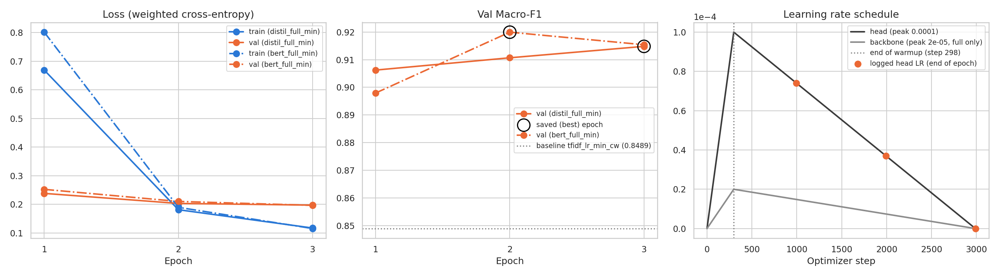
Preliminary (M2): validation set only. The test set is evaluated once, after model selection, in the final milestone. Filter by model or setup and sort by any column. Green = best, light = second best in each column. Seeds 43 and 44 repeat the full fine-tunes with a different seed only.
| Model | Text | Setup | Seed | Split | Macro-F1 (%) | Acc (%) | Train time (s) | Inference (ms/sample) | Params (M) | Size (MB) | Hardware |
|---|
Transformers vs baseline. DistilBERT reaches Macro-F1 0.9155 ± 0.0020 (three seeds) against 0.8489 for the baseline, +0.067, with accuracy 0.9373 vs 0.8751. It is better on all six classes, most on the two classes where the baseline is weakest: surprise (+0.086) and fear (+0.081). Text by text (seed 42), DistilBERT alone is right on 162 validation texts and the baseline alone on 38 (McNemar p < 0.001). The gain costs about 44× the training time (4.2 min on a T4 GPU vs 5.8 s on CPU), 340× the trainable parameters, 115× the file size, and one to two orders of magnitude slower prediction (1.4 ms vs 0.02–0.07 ms per text; the baseline's CPU timing varied between measurements).
BERT vs DistilBERT. BERT reaches 0.9163 ± 0.0032 against 0.9155 ± 0.0020. With the same seed, the difference is +0.0051, −0.0033 and +0.0005 (mean +0.0008), smaller than the seed-to-seed spread of either model; text by text (seed 42) BERT alone is right on 56 texts and DistilBERT alone on 47 (McNemar p ≈ 0.43). On this data there is no evidence that BERT is better, while it trains 2.0× and predicts 2.2× slower with 1.6× the parameters, so DistilBERT is the better trade-off. Caveats: validation only, three seeds per model, one untuned recipe for both.
| Model / setup | Runs | Mean | Std | Min–max |
|---|---|---|---|---|
| BERT, full fine-tune | 3 | 0.9163 | 0.0032 | 0.9145–0.9200 |
| DistilBERT, full fine-tune | 3 | 0.9155 | 0.0020 | 0.9140–0.9178 |
| TF-IDF + LR, class weights on | 1 | 0.8489 | – | – |
| Class (n) | TF-IDF + LR | DistilBERT | BERT |
|---|---|---|---|
| sadness (550) | 0.8959 | 0.9616 | 0.9579 |
| joy (702) | 0.9004 | 0.9561 | 0.9621 |
| love (176) | 0.8354 | 0.8853 | 0.9112 |
| anger (274) | 0.8800 | 0.9375 | 0.9440 |
| fear (211) | 0.8124 | 0.8929 | 0.8905 |
| surprise (80) | 0.7692 | 0.8554 | 0.8541 |
| Macro avg | 0.8489 | 0.9148 | 0.9200 |
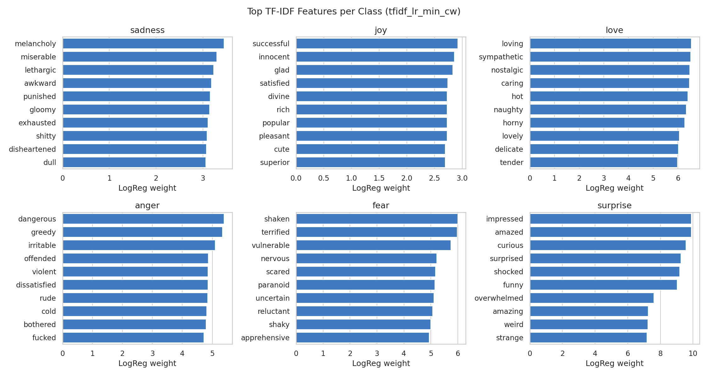
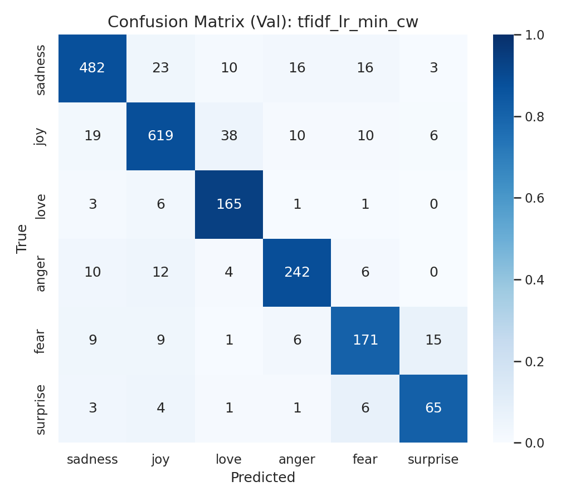
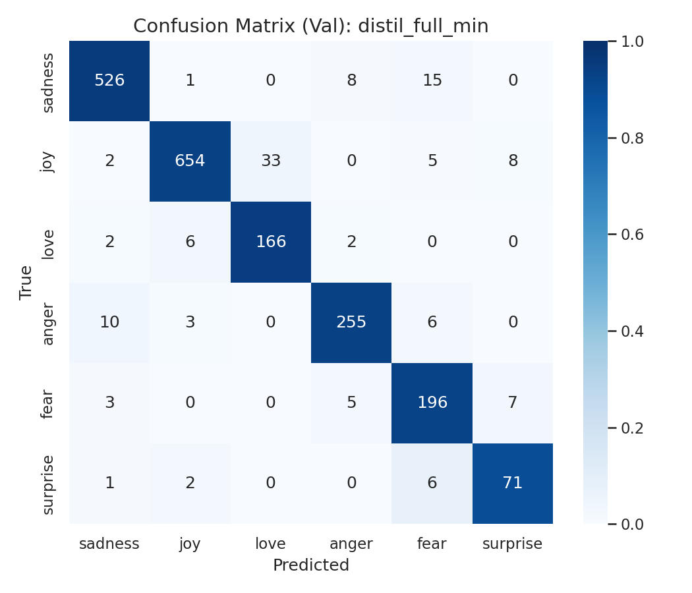
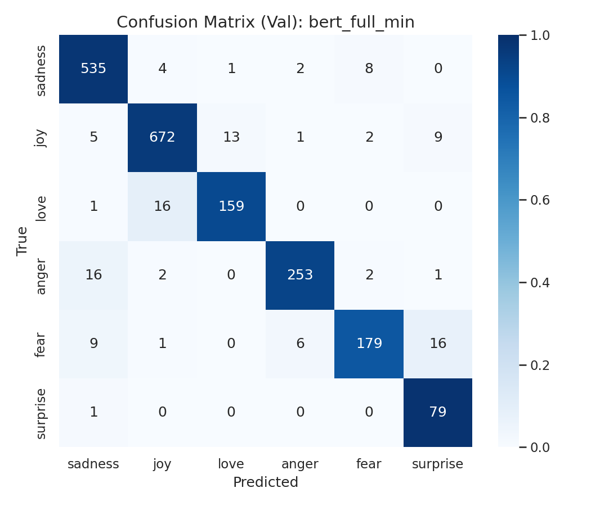
Colour = share of the true class (the diagonal is recall); numbers = counts. Test-set matrices follow in the final milestone.
Two controlled experiments, each changing one factor while everything else stays fixed (data, filtered splits,
text_min, MAX_LEN, batch order, learning rates, epochs, warmup, class weights, seeds 42/43/44).
Results are compared by the mean over three seeds against the seed-to-seed spread, never by one run.
Extra ablation (baseline, validation): balanced class weights raised Macro-F1 from 0.7527 to 0.8489 and surprise recall from 0.40 to 0.81, so they are used by every model. Stopwords removed vs kept for the baseline follows in the final milestone.
Planned for the final milestone: errors on the test set, grouped from
errors_<run>.csv with real examples. Preliminary view from the validation
confusion matrices of the seed-42 runs: counts below are texts of the true class predicted as the other class.
Causes are hypotheses to check, not results.
| Group | Description | Count (val) | Hypothesised cause | Improvement idea |
|---|---|---|---|---|
| joy → love | Joy texts predicted as love; the largest error of the baseline and DistilBERT | 38 / 33 / 13 of 702 joy texts; reverse love → joy 6 / 6 / 16 | Overlapping wording of the two emotions; class weights (love ×2.07, joy ×0.50) may push unclear texts to love | Read the examples; compare with a run without class weights |
| → surprise | Fear and joy texts predicted as surprise | fear → surprise 15 / 7 / 16; joy → surprise 6 / 8 / 9 | Words such as "overwhelmed", "shocked", "strange" fit both; surprise has the largest weight (×4.71) | BERT predicts surprise too often (precision 0.75, recall 0.99): check its examples |
| sadness ↔ anger | Negative emotions confused with each other | sadness → anger 16 / 8 / 2; anger → sadness 10 / 10 / 16 | Texts that express both hurt and annoyance | Group the examples by the emotion words they contain |
| sadness → fear | Sad texts predicted as fear; barely changed by the transformers | 16 / 15 / 8 of 550 sadness texts | Words like "anxious", "worried" sit between the two classes | Check whether the labels of these texts are consistent |
| Negation | Negated texts labelled by the emotion word ("i do not feel reassured" → joy) | Two examples seen in the EDA; to be counted | Labels follow keywords, not meaning | Count negated texts and the error rate on them |
DistilBERT removes most of the baseline's scattered errors (sadness texts predicted wrong: 68 → 24) but not joy → love or sadness → fear. BERT moves errors rather than removing them: it cuts joy → love from 33 to 13 but adds love → joy and over-predicts surprise, ending with almost the same number of correct texts (1,877 vs 1,868).
Limitations. Data: labels are machine-generated; 51 of 52 repeated-text groups had conflicting labels, and 14 test rows keep their disputed released labels; texts have no apostrophes ("I'll" appears as ill); there are no author IDs, so near-duplicates by the same writer cannot be detected. Method: one recipe for both transformers, not tuned; three epochs only, and the best epoch was the last one in five of six runs. Experiments: results so far are on validation only, with three seeds per transformer and one run for the baseline; timings are single measurements and the baseline ran on CPU while the transformers ran on GPU.
Conclusion (preliminary). A fine-tuned transformer clearly beats a strong lexical baseline (Macro-F1 0.9155 vs 0.8489 on validation), with the largest gains on the smallest classes, at a much higher compute cost. A larger encoder (BERT) does not improve on DistilBERT here, so DistilBERT is the better trade-off. Next: the frozen-encoder experiment, one final test evaluation of the selected models, error analysis with examples, and a cost table with repeated timing.
Presentation video: final milestone.